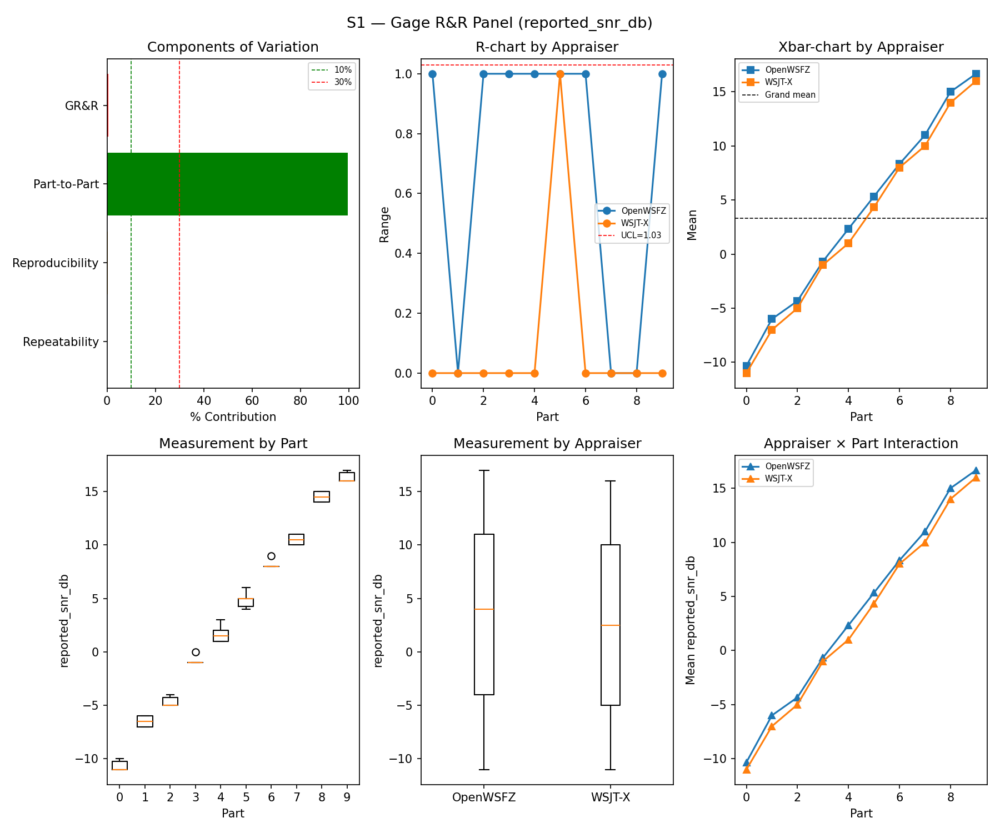
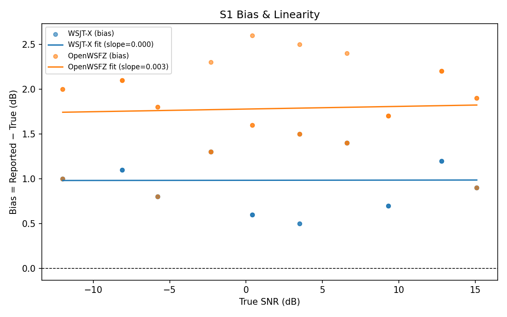

Note: This is a retroactively structured version of the original report (
report.md) for compliance with NFR-023 (five mandatory sections, STUDY-SPEC §9.0). The original report is preserved unchanged and remains the authoritative record. Section §5 (Recommendations) is omitted — this is a historical report predating NFR-023; the defect under validation (D-002) was resolved by this run, and retrospective recommendations would be anachronistic. The data, results, and verdicts are identical toreport.md; only §1 (Study Hypothesis) and §2 (Data Summary) have been added as formal framing.
Purpose: Targeted S1-only validation run to confirm resolution of defect D-002 (OpenWSFZ SNR over-bias). This is not a full R&R suite execution; it re-runs scenario S1 only to determine whether the combined fix brings OpenWSFZ mean SNR bias within the ±2.0 dB acceptance threshold.
Background: The 2026-06-07 baseline run (e4a3982) recorded OpenWSFZ SNR bias of +2.43 dB
— 0.43 dB above the ±2.0 dB threshold, constituting a FAIL. Investigation established that
the bias is driven by the shim's SNR constant (−26.0 dB), which under-estimates noise in the
reference bandwidth. PCM amplitude normalisation was explored as a supplementary measure but
found to be invariant: both signal_db and noise_floor_db are waterfall-derived, making
the SNR formula independent of PCM amplitude scaling. The root cause was therefore the shim
constant, not PCM amplitude.
Two interventions applied to this SHA (0a0f8a5):
ft8_shim.c SNR constant adjusted −26.0 → −26.5 dB (FT8_SHIM_VERSION 20260006).Ft8Decoder.cs PCM normalisation to 0.20 RMS target (PcmNormalisationTargetRms);
confirmed invariant to bias but retained as a defensive audio-conditioning measure.Primary hypothesis:
Secondary check:
91f68dd). This run
provides a further 30-cycle confirmation. A D-003 event in this run would corrupt the bias
measurement and require the run to be discarded.Audio chain at run time: Kaiser FIR noise filter at 4 700 Hz (β = 6.0, N = 255), merged
d54a4b0 (2026-06-08). Noise cutoff and FIR parameters unchanged from the 91f68dd
diagnostic run. PortAudio peak normalisation to 0.9 applied by run_scenario.py.
| Field | Value |
|---|---|
| Run date | 2026-06-11 |
| OpenWSFZ SHA | 0a0f8a5e8de8e5ff38e07dcd4fb9d01baaf8af18 |
| WSJT-X version | WSJT-X 2.7.0 (inferred from binary date 2025-02-04) |
| FT8_SHIM_VERSION | 20260006 |
| PCM normalisation | 0.20 RMS target (PcmNormalisationTargetRms) |
| Noise filter | Kaiser FIR, 4 700 Hz cutoff, β=6.0, N=255 |
| Scenarios run | S1 only (S2–S8 unchanged from e4a3982 baseline) |
| Signal source | Synthetic (GFSK encoder, Q-prefix calls per NFR-021) |
S1 measurement dimensions:
| Field | Value |
|---|---|
| SNR ladder | −12, −9, −6, −3, 0, 3, 6, 9, 12, 15 dB (10 parts) |
| Trials per part | 3 |
| Appraisers | WSJT-X, OpenWSFZ (crossed design) |
| Valid measurement pairs | 60 |
Defects under active investigation at run time:
| ID | Severity | Status at run time | Description |
|---|---|---|---|
| D-002 | Medium | Under validation — this run is the resolution gate | SNR bias +2.43 dB (from e4a3982); threshold ±2.0 dB |
| D-003 | Medium | Open — monitoring only | Intermittent ~15 dB SNR under-report; opened 2026-06-10, GitHub #11. Did not manifest in 91f68dd (30/30 clean). |
Bias correction history (S1 OpenWSFZ, synthetic):
| Run | SHA | Shim ver | Bias | Verdict |
|---|---|---|---|---|
| 2026-06-07 | e4a3982 |
20260004 | +2.43 dB | FAIL |
| 2026-06-10 | 91f68dd |
20260005 | +2.42 dB | FAIL |
| 2026-06-11 | 6ce38a3 |
20260005 | +2.28 dB | FAIL (PCM norm target=0.08; invariant) |
| 2026-06-11 | 4ab061a |
20260005 | +2.28 dB | FAIL (PCM norm target=0.20; invariant) |
| 2026-06-11 | 0a0f8a5 |
20260006 | +1.78 dB | PASS |
Acceptance threshold:
| Metric | Threshold | Source |
|---|---|---|
| OpenWSFZ SNR bias | ±2.0 dB | spec.md §SNR accuracy / D-002 acceptance criterion |
| Component | σ² | %Contribution |
|---|---|---|
| Repeatability | 0.13 | 0.16% |
| Reproducibility | 0.32 | 0.39% |
| Part-to-Part | 83.03 | 99.45% |
| Total GR&R | 0.46 | 0.55% |
| Total | 83.49 | 100.00% |
| Metric | Value | Verdict |
|---|---|---|
| %Tolerance (GR&R) | 40.50% | PASS |
| %Study Var (GR&R) | 7.39% | — |
| ndc | 19 | PASS |

| Appraiser | Mean Bias (dB) | Slope | Intercept | R² | Verdict |
|---|---|---|---|---|---|
| WSJT-X | +0.98 | 0.000 | 0.983 | 0.000 | PASS |
| OpenWSFZ | +1.78 | 0.003 | 1.778 | 0.003 | PASS |

| Metric | Scope | Value | Threshold | Verdict |
|---|---|---|---|---|
| %GR&R | S1 | 0.5% | < 30% | PASS |
| ndc | S1 | 19 | ≥ 5 | PASS |
| SNR bias | S1/WSJT-X | +0.98 dB | ±2.0 dB | PASS |
| SNR bias | S1/OpenWSFZ | +1.78 dB | ±2.0 dB | PASS |
Overall verdict: PASS
D-002 resolution confirmed. OpenWSFZ mean SNR bias = +1.78 dB ≤ ±2.0 dB threshold.
Prior bias of +2.43 dB (run e4a3982, 2026-06-07) reduced by 0.65 dB through shim constant
adjustment (−26.0 → −26.5 dB, FT8_SHIM_VERSION 20260006). D-003 did not manifest (0 events
in this run). GitHub issue #8 closed.
S2–S8 were not re-run; this run was scoped to D-002 validation only. The reference results
for all other scenarios remain those of the e4a3982 (2026-06-07) baseline. S6 corpus replay
(corpus-2026-06-11/) had not been conducted at the time of this run; that study subsequently
revealed that the synthetic-test S1 PASS does not fully generalise to real off-air signals
(D-004, GitHub #12).
Omitted. This is a historical report predating NFR-023 (five-section structure requirement, introduced 2026-06-11). The defect under validation (D-002) was resolved by this run and formally closed (GitHub #8). Retrospective recommendations would be anachronistic.
For subsequent investigation actions, refer to: - D-002 (closed):
openspec/changes/fix-d002-snr-bias/— OpenSpec change archive. - D-003 (open): GitHub #11 — Intermittent SNR under-report; soak testing required. - D-004 (opened after this run): GitHub #12 — SNR field validity gap; discovered via S6 corpus replay (corpus-2026-06-11/).